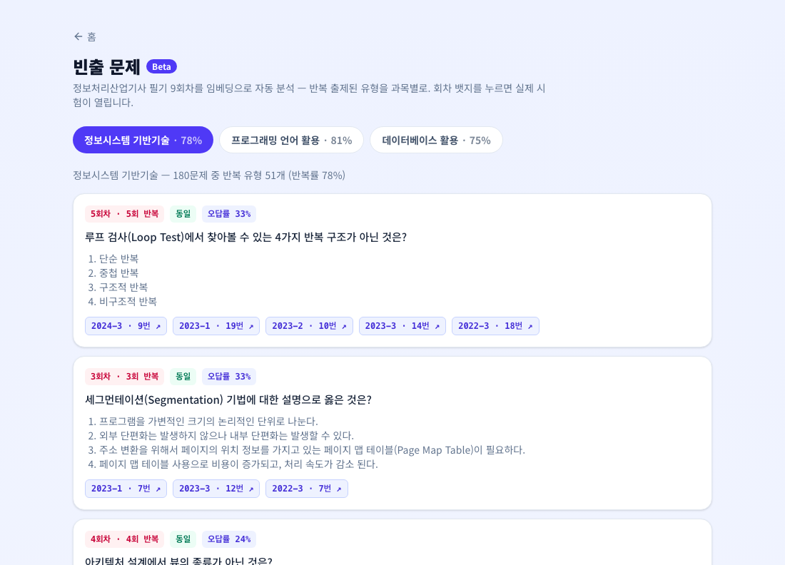
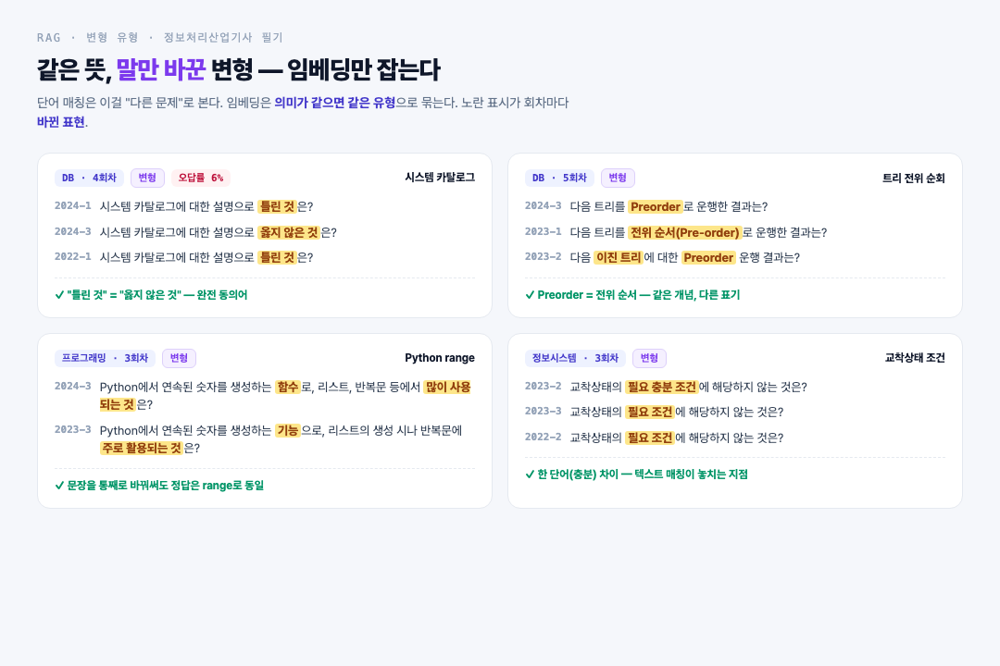
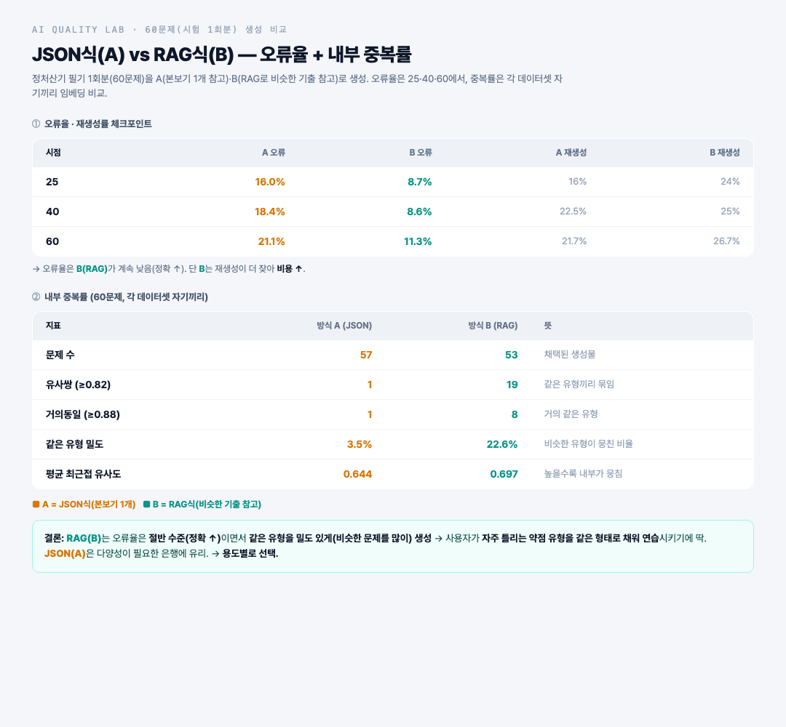
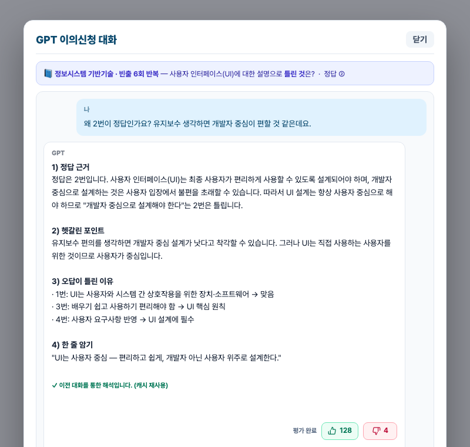

01 / 14
개인 프로젝트 · Core-CBT
수작업을 자동화로 바꾼
빈출 문제 개발기
사람이 하던 일을 임베딩·벡터·AI로 자동화 — 비슷한 빈출 유형을 찾고, 해설을 원클릭으로. 무슨 기술을, 왜 썼나.
임베딩 · 벡터RAG A/B 실험AI 해설 자동화Next.js · pgvector
정보처리산업기사 CBT 학습 웹 · 문제 → 해결 → 이득 · 2026
02 / 14
우리 웹
IT 자격증 CBT 학습 웹
회차별 기출을 실제 시험처럼 풀고, 오답 추적·AI 해설까지 —
여러 자격증을 한 곳에서.
지원 자격증
정보처리산업기사네트워크관리사 2급SQLDAI 프롬프트
AI 기능
GPT 해설보기빈출 자동 분석오답 재학습개인 약점 맞춤
Stack — Next.js(App Router) · Tailwind · PostgreSQL + pgvector · OpenAI 임베딩·gpt-4.1-mini · Langfuse
03 / 14
왜 만들었나 · 차별점
기존 CBT가 있는데 새로 만든 이유
기존 CBT (영진닷컴 등)
- 문제만 빠르게 넘기는 UI — 한 문제를 깊게 보거나 오답을 다시 파는 흐름이 없음
- 모르는 문제가 나오면 창을 나가 ChatGPT에 문제를 복붙해 따로 물어봐야 — 흐름이 끊김
- 내가 자주 틀리는 약점·유형을 모아주는 개인화가 없음
Core-CBT — 불편한 걸 하나씩 고침
- 한 문제에 집중 — 모르겠어요 표시·오답만 다시 풀기·재학습 모드로 약점을 파고듦
- 풀다 막히면 그 자리에서 GPT 해설보기 원클릭 — 복붙·창 이동 없이 4섹션 해설
- 오답·빈출을 임베딩으로 분석해 '내 약점 유형'을 자동으로 모아 우선 연습
04 / 14
성과 ① · 빈출 문제 자동 탐지
사람이 못 하던 걸 자동으로
문제
필기 기출이 75~81% 반복인데 사용자는 뭐가 빈출인지 모름. 540문제를 사람이 눈으로 비교·태깅하는 건 사실상 불가능.
해결
글자 그대로의 JSON으론 '비슷한 문제'를 못 찾음 → 문제를 임베딩(의미 벡터)해 벡터로 → 유사도로 자동 군집.
이득
157개 빈출 유형 자동(사람 태깅 0). "6회 반복 + 오답률 33%" → 자주 틀리는 걸 우선 연습.
text-embedding-3-smallpgvector (벡터DB)코사인 유사도 · Union-Find

실제 앱 · /frequent (과목 탭 · 반복 회차 · 오답률 뱃지)
05 / 14
핵심 · 왜 벡터인가
"같은 문제"가 아니라 비슷한 유형까지
단어 매칭은 말만 바꾼 반복을 놓친다. 임베딩은 의미로 묶어 변형까지 잡는다 — 동일 135 · 변형 22개 유형.
✓ 완전 동일
루프 검사의 4가지 반복 구조가 아닌 것은?
5개 회차 · 글자까지 동일
✓ 변형 — 임베딩만 잡음
교착상태의 필요충분조건 vs 필요조건에 해당하지 않는 것은?
뜻 같고 표현 다름

실제 변형 유형 · 노란 표시 = 회차마다 바뀐 표현 (임베딩만 묶음)
06 / 14
성과 ② · 생성 방식 A/B 실험
비슷한 유형을 쏟아내
약점을 메운다
문제
사용자가 자주 틀리는 약점 유형 — 그 유형 문제를 어떻게 더 줄까? JSON식 vs RAG식, 감으론 못 정함.
해결
60문제(시험 1회분)를 A/B로 생성 → 25·40·60마다 오류율·유사도 측정.
이득
RAG는 오류율 절반(정확↑) + 비슷한 유형을 밀도 있게 생성 → 약점 유형을 같은 형태 문제로 채워 보완(약점 구조로 이어짐).

실험 아티팩트 · 60문제 A/B — 오류율(25·40·60) + 내부 중복률
07 / 14
기술 의사결정 · 저장소
JSON에서
Postgres + pgvector로
문제
문제은행이 JSON 파일 — 커지면 전부 읽어야 하고, 관계형 쿼리·'비슷한 문제'(벡터) 검색이 안 됨.
해결
정형은 SQL, 의미 검색은 벡터 — 둘 다 필요해서 Postgres에 pgvector를 붙임. (MySQL은 오픈소스 벡터 인덱스가 없음)
이득
문제·정답·임베딩이 한 테이블 → 과목 필터 + 벡터 유사도를 한 쿼리에. 별도 벡터DB 불필요.
CREATE EXTENSION vector; -- 벡터를 Postgres 안으로
SELECT * FROM problems
WHERE subject = 'DB' -- ① SQL 필터
ORDER BY embedding <=> q -- ② 벡터 유사도
LIMIT 5; -- 한 쿼리에 ①+②
08 / 14
성과 ③ · GPT 해설 → 기본 해설
GPT 해설을 기본 해설로,
비용은 아래로
문제
해설이 부실한 문제는 볼 때마다 GPT 해설보기를 눌러 생성. 호출할 때마다 GPT API 비용이 계속 쌓임.
해결
👍좋아요로 검증된 GPT 해설을 골라 우리 기본 해설로 채택. (gpt-4.1-mini · 4섹션 포맷)
이득
같은 문제에 GPT를 다시 부를 필요 없음 → GPT 호출·비용 ↓. 해설 품질도 균일하게 ↑.

GPT 해설보기 결과(4섹션) → 검증 후 기본 해설로 채택 (재호출·비용↓)
09 / 14
확장 구조 · 개인 맞춤
빈출 + 오답을 합쳐 약점 유형 새 문제를
같은 기술(임베딩·군집·RAG)을 이어 붙이면 — 개인이 틀린 유형을 모아 '비슷하지만 새로운' 문제를 뽑아내는 구조가 된다.
기출 문제은행 · 필기 840+
회차별 문항 원본
↓
임베딩 — 의미 벡터화
text-embedding-3-small
✓ 배포↓
빈출 유형 군집
자주 나온 유형
✓ /frequent내 오답 유형 군집
개인 약점 (오답률 집계)
✓ 데이터
↓
RAG로 같은 유형 새 문제 생성
같은 개념·다른 표현의 새 문항
✓ A/B 60문항 검증↓
개인 약점 맞춤 새 문제 출제
틀린 유형만 골라 반복 연습
🔜 조립 단계
10 / 14
불편 → 자동화 → 편해짐
수작업을 전부 자동으로 바꿨다
영역
Before · 수작업
After · 자동
효과
빈출 유형
✕540문제 눈으로 비교(사실상 불가)
→임베딩 자동 군집
157개 유형 · 태깅 0
문제 해설
✕볼 때마다 GPT 반복 호출
→검증된 GPT 해설을 기본값으로
GPT 호출·비용 ↓
신고 처리
✕신고 1건씩 확인·수정
→12건 일괄 처리 파이프라인
처리량 대폭 ↑
공통 원리 — 반복되는 수작업은 데이터·AI로 자동화하고, 사람은 판단만.
11 / 14
성과 한눈에
숫자로 남긴 결과
157개
빈출 유형 자동 탐지
임베딩 군집으로 · 사람 태깅 0
75~81%
필기 기출 반복률
동일 135 · 변형 22 자동 분류
오류 ½
RAG 품질 A/B 검증
60문항 · 오류율 21% → 11%
임베딩 분석 → A/B 실험으로 저장소 결정 → 실서비스 /frequent 배포 + AI 해설까지.
12 / 14
트러블슈팅
과목이 섞여 "네트워크 문제가 유독 많다"는 착시
→
문제마다 과목 꼬리표를 붙여 같은 과목끼리만 비교
푼 사람이 적은 문제(5~19명)는 오답률이 들쭉날쭉
→
20명 이상 푼 문제만 오답률 공개 → 믿을 숫자만
분석 프로그램이 파일 경로를 못 찾거나 도중에 멈춤
→
경로를 자동으로 찾는 로더 + 실패 시 재시도
같은 문제 해설을 GPT에 매번 새로 물어 돈·시간 낭비
→
받은 해설을 저장해뒀다가 그대로 재사용
13 / 14
개선 & 배운 점
반복 작업 자동화
손이 많이 가던 빈출 정리·해설 작성·신고 처리를 AI·임베딩이 대신함.
감이 아닌 데이터로 결정
실험으로 실제 이득을 재보고 결정 — 필요한 만큼만 만듦.
의미로 찾는 검색 적용
글자가 아닌 '의미'로 비슷한 문제를 찾아 빈출·약점을 자동 정리.
기존 기능은 그대로
새 화면·데이터만 추가, 테스트 89개 전부 통과. 추가 비용 없음.
Core-CBT · 임베딩·벡터·AI로 반복 수작업을 자동화하다
14 / 14
추후 할 것 · Roadmap
프롬프트 × 모델 실험 루프
해설·생성 품질을 계속 끌어올리기 위해 — Langfuse에 등록한 프롬프트와 OpenRouter의 여러 모델을 양방향으로 돌려 자동 튜닝.
① 프롬프트 고정 → 모델 탐색
Langfuse 등록 프롬프트를 그대로 두고
OpenRouter로 여러 모델을 한 번에 실행
→ 제일 잘 나온 모델을 선택
② 모델 고정 → 프롬프트 개선
잘 나온 모델을 기준으로
프롬프트를 이것저것 바꿔가며 비교
→ 개선 버전을 다시 Langfuse에 등록
오류율·재생성·중복도
Langfuse 스코어로 측정
↓ 스크롤 / 방향키로 이동